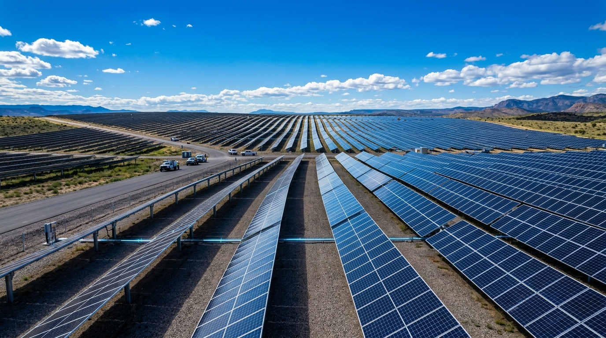

01 / RADIACIÓN FOTOVOLTAICA
ENERGÍA SOLAR
Aprovecha directamente la radiación solar mediante el efecto fotoeléctrico. Los fotones incidentes excitan electrones en las uniones de silicio de los paneles, generando corriente continua (DC). Inversores electrónicos trifásicos sincronizan esta energía en fase y frecuencia (50/60 Hz) para su inyección inmediata a la red de transporte.
Concepto Técnico Destacado
Generación limpia modular sin piezas móviles: densidad energética pico de ~1000 W/m² con celdas de silicio monocristalino de alta eficiencia.